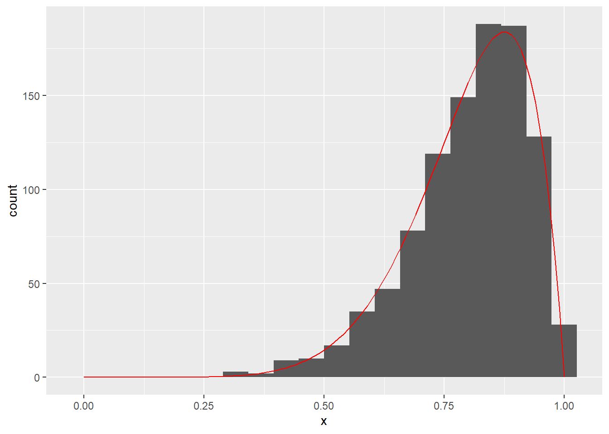
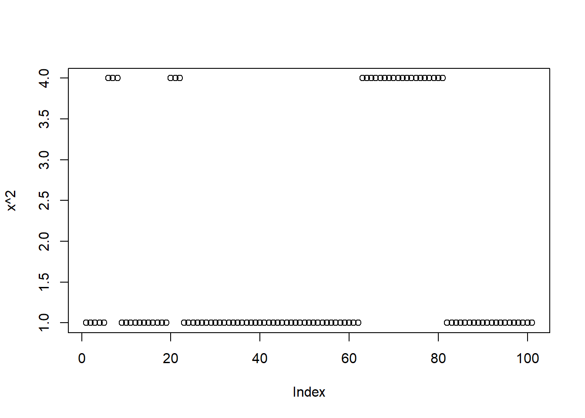

Chapter 4 Markov Chains
Exercise 4.1 (Global behavior from local rules) We are are going to move on the [0,1] interval by starting somewhere and then applying different rules to determine the next position. These rules will be local in the sense that they will depend only on the current position. In other words, we are going to simulate Markov Chains with a continuous state space.
For each of the below local rules separately try to guess what the long run distribution of visited states will look like. Does it depend on where we start? Then pick a starting point on \([0,1]\) and simulate 100000 steps and plot the histogram. Does it match your guess? Does the histogram depend on where you started?
- Uniform proposal: \(x_\text{next} \sim U(x_\text{current} - 0.1, x_\text{current} + 0.1)\) and we bounce if we would jump to less than 0 or more than 1. For example, if we would jump to \(1 + x\), we instead replace that with a jump to \(1 - x\), and if we would jump to \(-x\), we instead jump to \(x\).
- Normal proposal: \(x_\text{next} \sim N(\mu = x_\text{current}, \sigma = 0.1)\) and we bounce if we would jump to less than 0 or more than 1. For example, if we would jump to \(1 + x\), we instead replace that with a jump to \(1 - x\), and if we would jump to \(-x\), we instead jump to \(x\).
- Uniform proposal with teleport on one side: \(x_\text{next} \sim U(x_\text{current} - 0.1, x_\text{current} + 0.1)\) and we bounce if we would jump to less than 0. For example, if we would jump to \(-x\), we instead replace that with a jump to \(x\). If we would jump to more than 1, however, we now teleport to the left. That is if we would jump to \(1 + x\), we instead jump to \(x\).
- Asymmetric uniform proposal: \(x_\text{next} \sim U(x_\text{current} - 0.1, x_\text{current} + 0.11)\) and we bounce if we would jump to less than 0 or more than 1. For example, if we would jump to \(1 + x\), we instead replace that with a jump to \(1 - x\), and if we would jump to \(-x\), we instead jump to \(x\).
- Tendency to \(\frac{1}{2}\): \(x_\text{next} \sim U(x_\text{current} - 0.1, x_\text{current} + 0.12)\) if \(x_\text{current} < 0.5\) and \(x_\text{next} \sim U(x_\text{current} - 0.12, x_\text{current} + 0.1)\) otherwise. $We bounce if we would jump to less than 0 or more than 1. For example, if we would jump to \(1 + x\), we instead replace that with a jump to \(1 - x\), and if we would jump to \(-x\), we instead jump to \(x\).
move <- function(my_rule, start = 0.5, seed = 0, m = 100000) {
set.seed(seed)
x <- array(0, dim = m + 1)
x[1] <- start
for (i in 1:m) {
x[i + 1] <- my_rule(x[i])
}
x
}- Uniform proposal:
rule_A <- function(x) {
x_new <- runif(1, x - 0.1, x + 0.1)
if (x_new > 1) x_new <- 2 - x_new
if (x_new < 0) x_new <- 0 - x_new
x_new
}
hist(move(rule_A))
- Normal proposal:
rule_B <- function(x) {
x_new <- rnorm(1, x, 0.1)
if (x_new > 1) x_new <- 2 - x_new
if (x_new < 0) x_new <- 0 - x_new
x_new
}
hist(move(rule_B))
- Uniform proposal with teleport on one side:
rule_C <- function(x) {
x_new <- rnorm(1, x, 0.1)
if (x_new > 1) x_new <- x_new - 1
if (x_new < 0) x_new <- 0 - x_new
x_new
}
hist(move(rule_C))- Asymmetric uniform proposal:
rule_D <- function(x) {
x_new <- runif(1, x - 0.1, x + 0.11)
if (x_new > 1) x_new <- 2 - x_new
if (x_new < 0) x_new <- 0 - x_new
x_new
}
hist(move(rule_D))- Tendency to 0.5:
rule_E <- function(x) {
if (x < 0.5) {
x_new <- runif(1, x - 0.1, x + 0.12)
} else {
x_new <- runif(1, x - 0.12, x + 0.1)
}
if (x_new > 1) x_new <- 2 - x_new
if (x_new < 0) x_new <- 0 - x_new
x_new
}
hist(move(rule_E)) ```
Exercise 4.2 (Properties of Markov Chains) For each of the Markov chains defined below do the following:
- Find all communicating classes and show whether or not the chain is irreducible,
- For each state determine its period and whether it is transient, positive recurrent or null recurrent.
- Find all stationary distributions and show that there are no other stationary distributions.
\[K = \begin{bmatrix} 0 & \frac{4}{5} & 0 & \frac{1}{5} & 0 \\[0.1em] \frac{1}{4} & 0 & \frac{1}{2} & \frac{1}{4} & 0 \\[0.1em] 0 & \frac{1}{2} & 0 & \frac{1}{10} & \frac{2}{5} \\[0.1em] 0 & 0 & 0 & 1 & 0 \\[0.1em] \frac{1}{3} & 0 & \frac{1}{3} & \frac{1}{3} & 0 \end{bmatrix}.\]
\[K = \begin{bmatrix} \frac{1}{10} & \frac{2}{10} & \frac{3}{10} & \frac{4}{10} \\[0.1em] 0 & \frac{5}{10} & \frac{2}{10} & \frac{3}{10} \\[0.1em] 0 & 0 & \frac{3}{10} & \frac{7}{10} \\[0.1em] 0 & 0 & \frac{1}{10} & \frac{9}{10} \end{bmatrix}.\]
\[K = \begin{bmatrix} 1 & 0 & 0 & 0 \\[0.1em] 0 & \frac{1}{2} & \frac{1}{2} & 0 \\[0.1em] 0 & \frac{1}{2} & \frac{1}{2} & 0 \\[0.1em] \frac{1}{2} & 0 & 0 & \frac{1}{2} \end{bmatrix}.\]
\(S = \mathbb{Z}\) (integers). If we are in state \(z\), we have \(\frac{1}{2}\) probability to move to \(z - 1\) and \(\frac{1}{2}\) probability to move to \(z + 1\)
- \(S = \mathbb{Z}\). If we are in state \(z > 0\), we have \(\frac{4}{5}\) probability to move to \(z - 1\) and \(\frac{1}{5}\) probability to move to \(z + 1\). If we are in state \(z < 0\), we have \(\frac{4}{5}\) probability to move to \(z + 1\) and \(\frac{1}{5}\) probability to move to \(z - 1\). If we are in \(z = 0\), we have equal probability to move to \(+1\) or \(-1\).
library(igraph)
am <- matrix(c(0, 1, 0, 1, 0,
1, 0, 1, 1, 0,
0, 1, 0 ,1 ,1,
0, 0, 0, 1, 0,
1, 0, 1, 1, 0), ncol = 5, byrow = T)
plot(graph_from_adjacency_matrix(am))We can see that 1, 2, 3, and 5 communicate with eachother and 4 communicates only with itself. Therefore, we have two communicating classes and the chain is not irreducible. The class {4} clearly has a period of 1. The class {1, 2, 3, 5} has a period of 2. We can determine this by focusing on one state, for example 1, which can only be revisited in multiples of 2 (we can only return to 1 from 2 or from 5, but not from 3, therefore all possible return paths will be of length that is a multiple of 2). Because all states in a communicating class share the period, they all have a period of 2.
State {4} is clearly positive recurrent (it has a return time of 1). State {1} is transient, because we will sooner or later transition to {4} and never return to {1}. Therefore, all states in this communicating class are transient.
Given that all paths will eventually end up in state 4, only [0, 0, 0, 1, 0] can possibly be a stationary distribution. By multipling with the transition matrix, we can quickly check that it is indeed a stationary distribution. ```
Exercise 4.3 (Autocorrelation) Consider these three Markov Chains with state space {1,2}:
\[K_1 = \begin{bmatrix} 0.9 & 0.1 \\[0.1em] 0.1 & 0.9 \end{bmatrix}.\]
\[K_2 = \begin{bmatrix} 0.5 & 0.5 \\[0.1em] 0.5 & 0.5 \end{bmatrix}.\]
\[K_3 = \begin{bmatrix} 0.1 & 0.9 \\[0.1em] 0.9 & 0.1 \end{bmatrix}.\]
- Show that all three Markov Chains have a unique stationary distribution and that it is the same distribution for all three.
- Let \(X\) be a random variable distributed according to the distribution from (a). Compute \(E[X^2]\).
- Estimate the expectation from (b) using 100 draws from the first Markov Chain. Plot the values of \(X^2\) for all samples over time (note that this is called a traceplot. Compute the lag 1 autocorrelation. Estimate the approximation error (incorrectly in this case) by dividing the squared root of the variance with the squared root of the number of samples. Now estimate it better by adding to the variance twice the sum of all covariances, before taking the squared root and dividing with the squared root of the number of samples. Compute the Effective Sample Size, which is just the actual sample size multiplied with the ratio between the naive variance and the corrected variance.
- Repeat (d) for the other two Markov Chains and discuss.
Solution. a. All three chains are finite state space and irreducible, so they all have a unique stationary distribution. From the symmetry of the transition matrices we can guess that the distribution also has to be symmetrical and that only leaves us with [0.5, 0.5]. We can quickly check by multiplying with each transition matrix that this is indeed the unique stationary distribution of all three.
\(E[X^2] = 1^2 0.5 + 2^2 0.5 = 2.5\).
- We can reuse the move() function from the first problem and just write a new rule:
rule_1 <- function(x) {
if (x == 1) x_new <- sample(1:2, 1, prob = c(0.9, 0.1))
if (x == 2) x_new <- sample(1:2, 1, prob = c(0.1, 0.9))
x_new
}
x <- move(rule_1, start = 1, m = 100)
mean(x^2)## [1] 1.742574plot(x^2)
sd(x^2) / sqrt(100) # naive estimate of MC error## [1] 0.130118acf(x^2, plot = F)$acf[2] # lag 1 autocorrelation## [1] 0.8372694acov <- acf(x^2, type = "covariance", plot = F)$acf
sqrt(acov[1] + 2 * sum(acov[-1])) / sqrt(100) # better estimate of MC error## [1] 0.3517387100 * var(x^2) / (acov[1] + 2 * sum(acov[-1])) # ESS## [1] 13.68467``` We can see how the simple estimate of approximation error fails us when our Monte Carlo is based on dependent (autocorrelated) samples. If we compute it correctly by taking into account autocorrelation, we will see that our MC error is high and that we need to take more samples. This is also identified through ESS, which is just a tenth of the actual sample size. d. Is left to the reader.